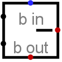

减法器
| 库： | 算术 |
| 引入版本： | 2.0 Beta 11 |
| 外观： |
 |
行为
该组件将西侧输入的值相减（上方减下方），并在东侧输出差值。该组件设计为可与其他减法器级联，以支持比单个减法器更宽的位宽减法：借位输入引脚提供一个借位值（若指定了借位输入），借位输出引脚指示该组件是否需要向高位借位以完成无下溢的减法（假设为无符号减法）。
在内部，减法器仅对减数执行按位取反，并将其与被减数以及借位输入的反相相加。（被减数是减法的第一个操作数（上方输入），减数是第二个操作数（下方输入）。我碰巧喜欢这些古老的术语。）
如果任一操作数包含某些浮空位或错误位，则该组件将执行部分减法。也就是说，它会尽可能计算低位；但从浮空位或错误位开始，更高位的结果也会是浮空位或错误位。
引脚
- 西侧边缘，北端（输入，位宽匹配数据位宽属性）
- 减法的被减数；即被减去的数。
- 西侧边缘，南端（输入，位宽匹配数据位宽属性）
- 减法的减数；即从被减数中减去的数。
- 北侧边缘，标记为b in（输入，位宽 1）
- 若为 1，则从差值中借出 1。若值未知（即浮空），则假定为 0。
- 东侧边缘（输出，位宽匹配数据位宽属性）
- 西侧输入的两个值相减的差值的低dataBits位，再减去bin位。
- 南侧边缘，标记为b out（输出，位宽 1）
- 为差值计算的借位。如果作为无符号值相减得到负值，则该位为 1；否则为 0。
属性
当组件被选中或添加时，Alt-0 到 Alt-9 会改变其 数据位宽 属性。